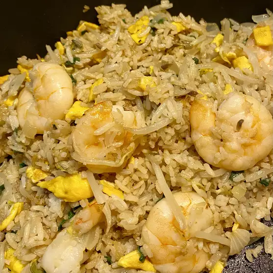

Shrimp Fried Rice

Description
The real shrimp fried rice, restaurant style.
This is how I used to cook fried rice when my father still owned a restaurant.
Ingredients
- 1 1/2 uncooked white rice
- 3 cups water
- 4 tablespoons vegetable oil
- 1 cup fresh bean sprouts
1/2 cup chopped onion
- 1 1/2 cups cooked medium shrimp, peeled and deveined without tail
- 1/4 cup chopped green onion
- 2 eggs, beaten
- 1 teaspoon salt
- 1/4 teaspoon ground black pepper
- 4 tablespoons soy sauce
- 1/4 teaspoon sesame oil
Steps
- Step 1: In a saucepan bring water to a boil.
Add rice and stir. Reduce heat, cover and simmer for 20 minutes.
Set aside and allow rice to cool.
- Step 2: Heat a large skillet or wok for 2 minutes. When the skillet or wok is hot, pour in vegetable oil, bean sprouts and onions.
Mix well and cook for 3 minutes.
- Step 3: Mix in cooled rice and shrimp and cook for another 3 minutes.
Stirring constantly.
- Step 4: Mix in green onions, eggs, salt, pepper, soy sauce and sesame oil.
Cook for another 4 minutes, stirring continuously, until eggs are cooked and everything is blended evenly.